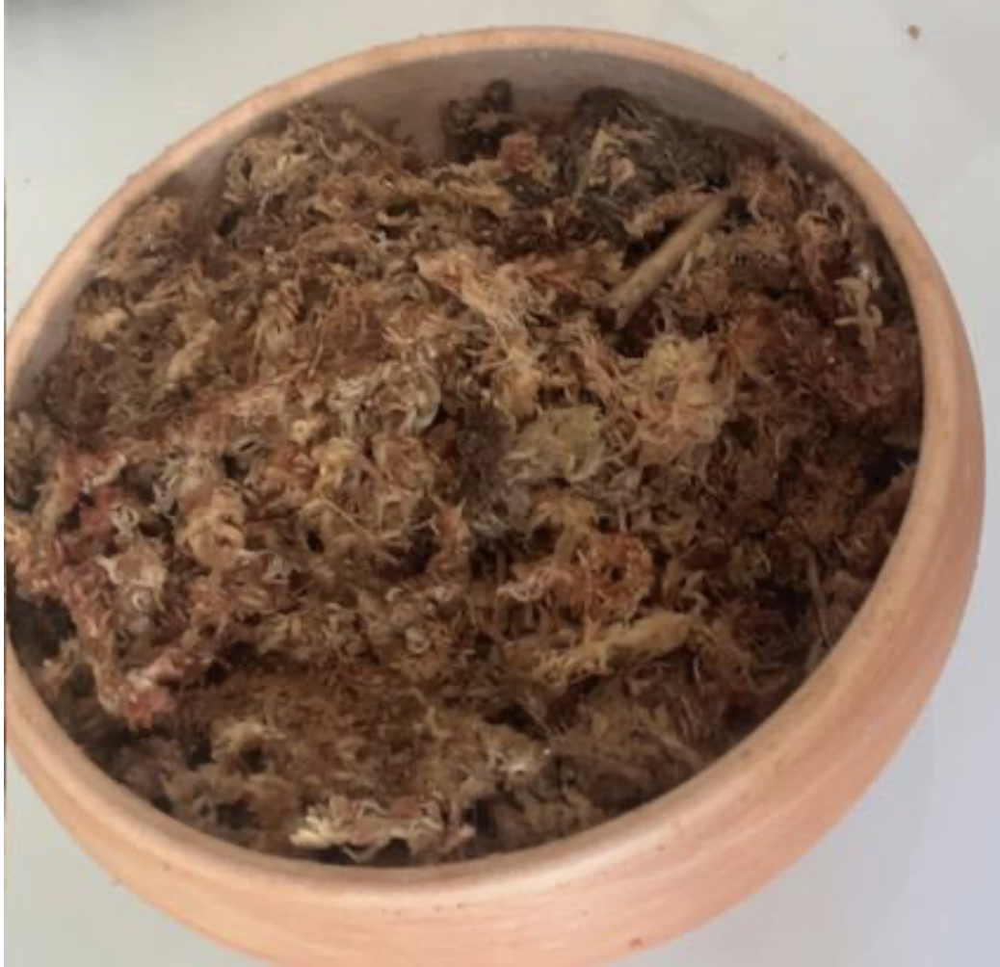

Un bonsaï est un être vivant qui demande attention et régularité. Quelques gestes simples suffisent pour qu'il s'épanouisse pendant des années.

La sphaigne est présente dans toutes nos créations. Elle joue un rôle essentiel :
L'arrosage est le geste le plus important — et le plus souvent mal maîtrisé. Arrosez quand la surface du sol est légèrement sèche au toucher, jamais en excès.
Nos bonsaïs sont des espèces tropicales ou subtropicales, conçus pour la vie en intérieur toute l'année.
La taille permet de conserver la forme et d'encourager une croissance dense et ramifiée.
Les bonsaïs ont besoin d'apports réguliers en nutriments pour rester vigoureux et en bonne santé.
Si vous avez un doute sur l'entretien de votre bonsaï, n'hésitez pas à nous contacter. Nous répondons avec plaisir.
Nous contacter